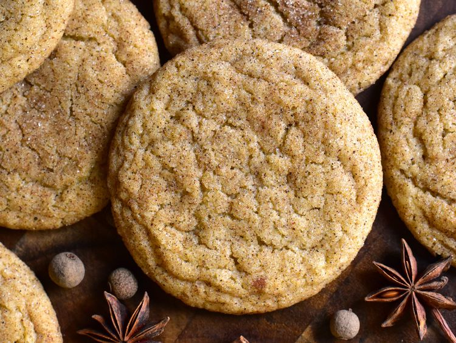

Description
These chai sugar cookies are chewy, buttery, and beautifully spicy!
Ingredients
Chai Spice Mix:
- 2 teaspoons ground cinnamon
- 1 teaspoon ground cardamom
- 1 teaspoon ground ginger
- 1/2 teaspoon ground nutmeg
- 1/2 teaspoon ground allspice
- 1/4 teaspoon ground cloves
Cookie Dough:
- 1/2 cup unsalted butter, softened
- 1/2 cup white sugar
- 1/4 cup firmly packed brown sugar
- 1 large egg, at room temperature
- 1 1/2 teaspoons vanilla extract
- 1 1/3 cups all-purpose flour
- 1 1/2 teaspoons chai spice mix
- 3/4 teaspoon baking powder
- 1/2 teaspoon baking soda
- 1/2 teaspoon salt
Chai Spice - Sugar Mix:
- 1/4 cup white sugar
- 2 teaspoons chai spice mix
Steps
- Stir cinnamon, cardamom, ginger, nutmeg, allspice, and cloves together in a small bowl; set aside.
- Preheat the oven to 350 degrees F (180 degrees C). Line 2 baking sheets with silicone baking mats or parchment paper.
- In a large bowl, cream together butter, 1/2 cup white sugar, and brown sugar until light and fluffy. Beat in egg and vanilla and mix until well combined. Mix in flour, 1 1/2 teaspoons of the chai spice mix, baking powder, baking soda, and salt until combined.
- Stir together 1/4 cup white sugar and 2 teaspoons of the chai spice mix in a shallow bowl.
- Shape dough into 1 tablespoon-sized balls. Dough will be slightly sticky, but should still roll into a ball. Roll each ball in chai spice-sugar mixture until coated. Place dough balls 2 inches apart on the prepared baking sheets.
- Bake cookies in the preheated oven until they begin to crack on top and look slightly set, 10 to 13 minutes. Cool cookies on pan for a few minutes before removing to a wire rack to cool completely.